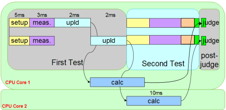

Hidden multisite calculation
SmartCalc provides support for hidden (parallel) calculation of multisite data.
Note All test times shown are examples.

In the figure above, compared to the original structure in SmartCalc use models, the overall test time will be reduced by 60 % resulting in a multisite efficiency around 90 %.
Functional changes
- Introduced in SmarTest 6.5.3